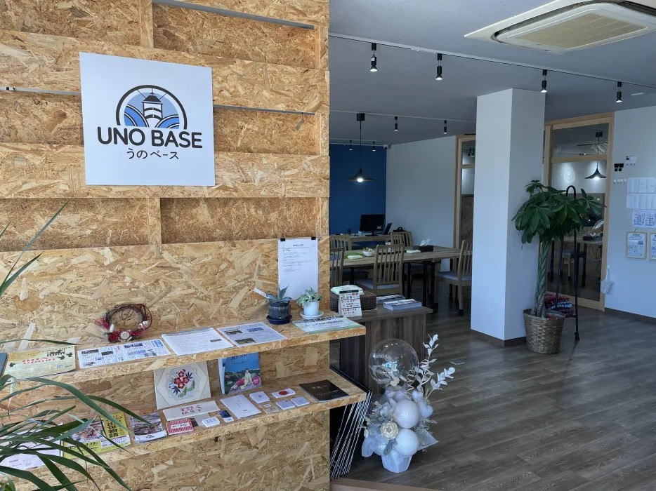
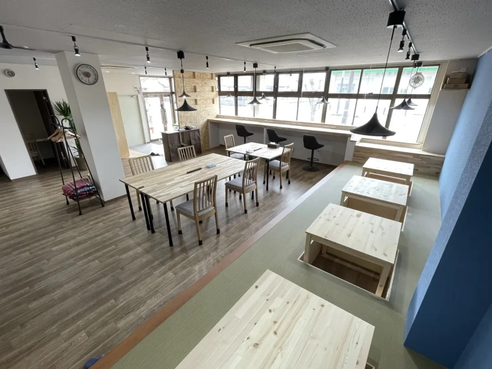
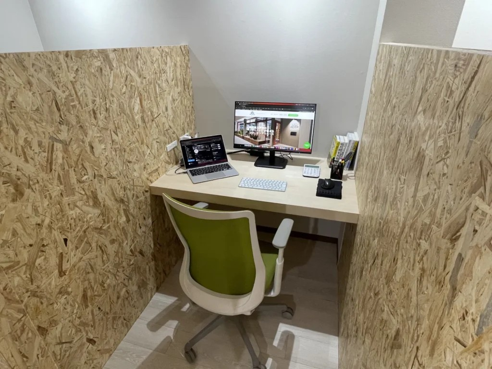
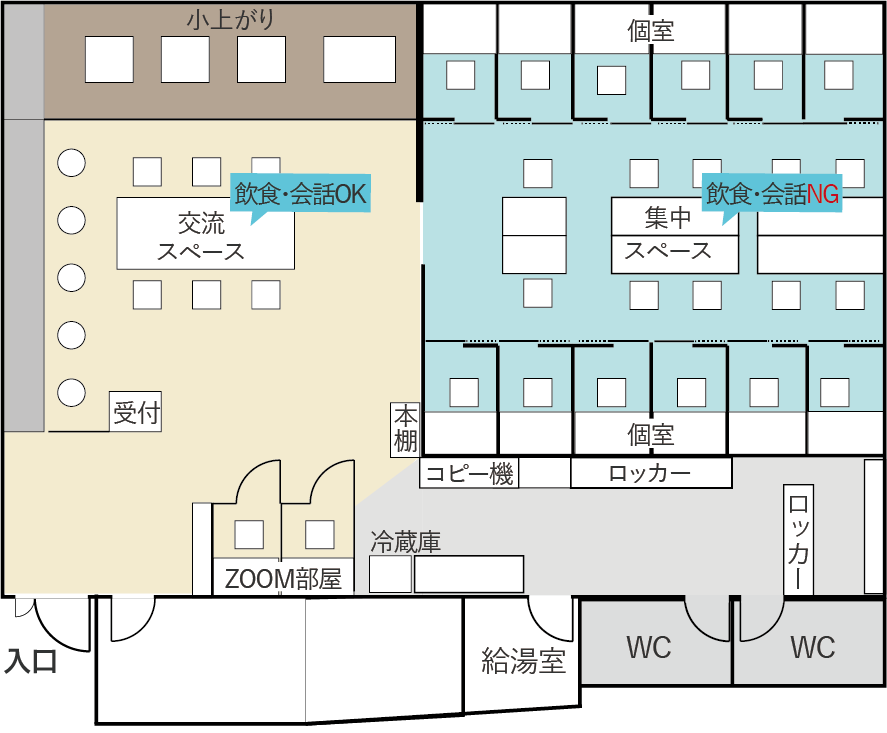

うのベース: 「やりたい」が集い、地域に愛される共創の拠点
「8割の集中」と「2割の交流」を両立させる、経営戦略としての空間設計
岡山県玉野市、宇野港のほど近く。コワーキングスペース「うのベース」は、オープンから3年目の今も、利用者同士が仲間として繋がり、街に定住者さえ生む稀有な場所となっています。
代表の東本さんは、設計前に全国の拠点を視察し、運営のヒントを徹底的にリサーチされていました。その「こだわり」を、阿部がどのように具現化したのか。ビジネスの成功を支える「空間の仕掛け」についてお話を伺いました。
■ 1. 「8割は作業、2割は交流」という本質を形にするゾーニング
—— 東本さんは、最初から「空間を分けたい」と強く希望されていましたね。
東本さん： 「多くのコワーキングを回って気づいたのは、利用者の8割は交流ではなく、純粋に『作業』を求めて来るという現実です。だからこそ、しっかりと作業に没頭できる『集中ルーム』と、会話が生まれる『交流ルーム』を物理的に分けることが不可欠でした。
しかし、完全に分断してはコミュニティが生まれません。そこで阿部さんが実現してくれたのが、アクリルの透過扉でした。集中は保ちつつも、扉越しに『あ、あの人が来ているな』と気配がわかる。この絶妙な距離感が、作業効率と交流のきっかけを両立させています。」
■ 2. 視察で得た知見を落とし込む「会話のトリガー」
—— キッチン周りや動線にも、他拠点での学びが活かされています。
東本さん： 「滋賀のコワーキングスペースで見た『利用者と目が合うキッチン』の配置が非常に印象的で、ぜひ取り入れたいと思っていました。コーヒーを淹れる、掲示板を見る……。そんな無防備な瞬間に目が合うことで、自然と会話が始まるんです。
阿部は私のそんな細かなこだわりを汲み取り、『集中ルームへ行くには必ず交流ルーム（リビング）を通らなければならない』という、住宅におけるリビング階段のような動線を計画してくれました。この仕掛けのおかげで、普段は黙々と作業している人同士も、すれ違いざまの挨拶から仲が深まっていく。まさに狙い通りの人間関係が築けています。」
■ 3. 建築士を「ビジネスの伴走者」として使い倒す
—— 阿部とのやり取りの中で、特に助かった点はどこでしょうか？
東本さん： 「何より、私の意図を即座に形にしてくれる『融通の良さ』ですね。設計の段階で採算性についても議論し、『個室が何室取れるか』という経営面でのシミュレーションに粘り強く付き合ってくれました。
また、現場でのライブ感のある打ち合わせも助かりました。実際に使うシーンを想定しながら、小上がりの高さやカウンターの寸法をミリ単位で調整したり、Wi-Fiが隅々まで届くようにルーターの収納位置を工夫したり。図面上の『綺麗さ』ではなく、運営者としての『使い勝手』を最優先に、プロの技術で支えてくれた安心感は大きかったです。」
■ 4. 空間が、街の「居場所」をデザインする
—— 完成から3年、今の風景をどう見ていますか？
東本さん： 「毎年開催する周年パーティーに、多くの利用者が集まってくれるのを見るたび、この間取りで正解だったと確信します。単なる作業場を貸しているのではなく、私たちは『居場所』を提供している。その基盤となる空間を阿部さんと一緒に作れたことが、今のコミュニティの強さに繋がっています。」
【建築士・阿部の視点】
オーナーの「知見」を、機能する「間取り」へ昇華させる
東本さんとのプロジェクトは、非常にロジカルで刺激的でした。 全国を回って集められた「うまくいくコワーキングの条件」を、どうやってこの築古物件の制約の中で実現するか。
- 動線の心理学： 「話しかけやすいタイミング」を建築的にデザインすること。
- 現場での微調整： 運営者の視点に立ち、カウンターや小上がりの高さを「体感」ベースで決定すること。
- 経営へのコミット： 採算性を考慮した個室数の確保と、コストバランスの提案。
弊社は、ただ図面を引くだけの存在ではありません。オーナー様が持つビジネスへの想いや、理想の顧客関係を理解し、それを技術で裏打ちする「最も使い勝手の良い道具」でありたいと考えています。
あなたのこだわりが詰まった「次の拠点」を、一緒に面白がらせてください。




完成形を歩き回れる体験
うのベースの3Dモデルで、バーチャルウォークスルーを体験してください。
(3Dウォークスルーは現在準備中です。)